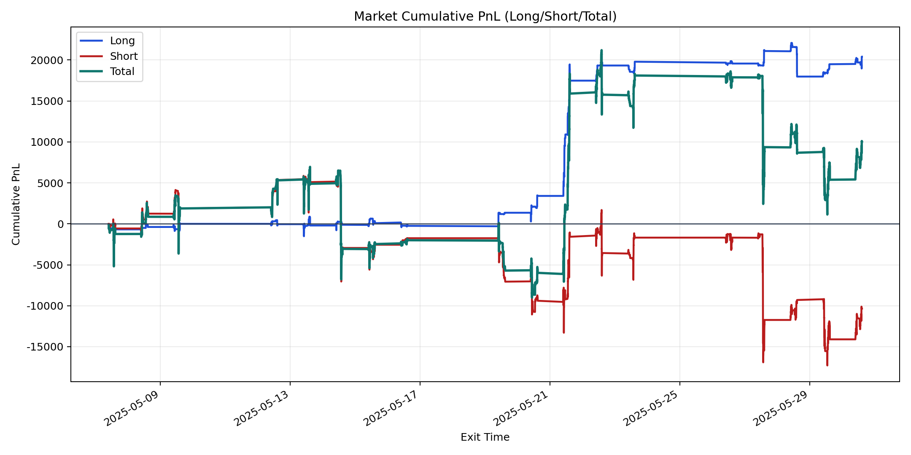
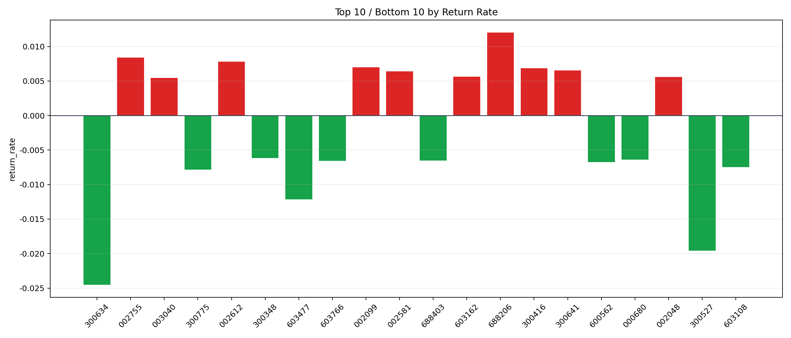

| repo_root | /home/haoranyou/data/output/alpha0.4_1w_5s_3ticks_index_filter/index_weights_1000 |
|---|---|
| period_months | 1 |
| period_label | 2025-05-07_to_2025-05-30 |
| start_time | 2025-05-07 09:50:22 |
| end_time | 2025-05-30 14:42:42 |
| n_trades | 9184 |
| n_symbols | 198 |
| total_pnl | 10046.098699999919 |
| long_total_pnl | 20404.22274999995 |
| short_total_pnl | -10358.124050000022 |
| total_entry_notional | 86202529.0 |
| long_entry_notional | 20920775.0 |
| short_entry_notional | 65281754.0 |
| total_return_rate | 0.00011654064928883837 |
| long_return_rate | 0.000975309124542468 |
| short_return_rate | -0.0001586679801832534 |
| top_symbols_by_return | ["688206", "002755", "002612", "002099", "300416", "300641", "002581", "603162", "002048", "003040"] |
| bottom_symbols_by_return | ["300634", "300527", "603477", "300775", "603108", "600562", "603766", "688403", "000680", "300348"] |

